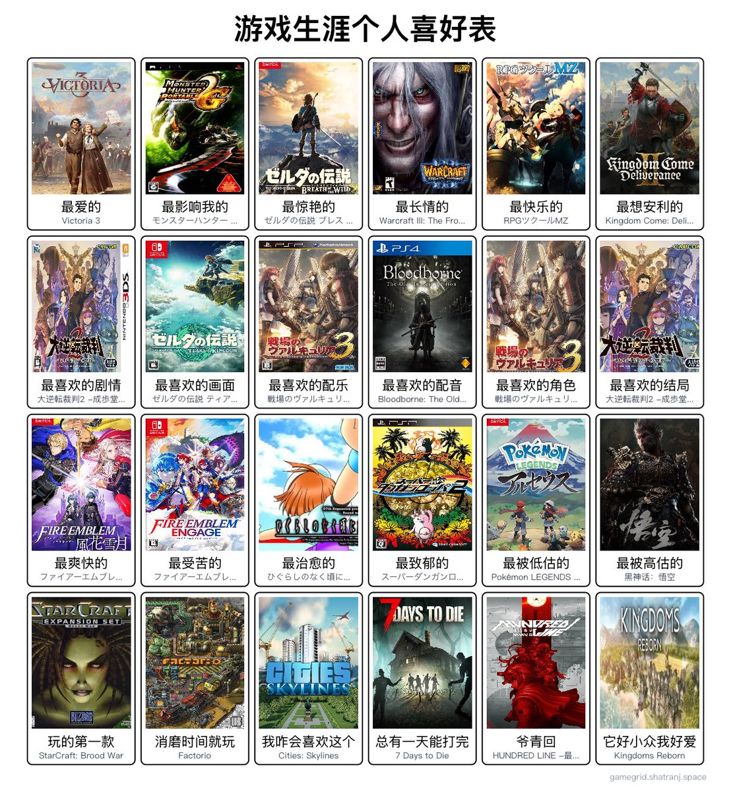

❂🇩🇪🇪🇺🌹𝐀𝐬𝐡𝐥𝐞𝐲 𝐁𝐥𝐨𝐜𝐤🍥🏳️⚧️🇹🇼❀
@bolckAshley
@Signalman_Free 唉我以前小的時候一直想要一台遊戲機
後來有了一台switch，但我的零花錢也不怎麼承擔得起買卡帶（
所以到最後還是以手游為主（

信号侠-真-自由混合形态
@Signalman_Free
我也要玩！
看了一下感觉任天堂就是我亲爹。
其实有一些只能选出一个我自己都有点说不过去，比如配乐，我纠结了好久才给了V3，其实给血源或者大逆也可以的，安利那里也是，想安利的太多了。 https://t.co/gyrKQm7j7c https://t.co/KZ0gZPpTsj